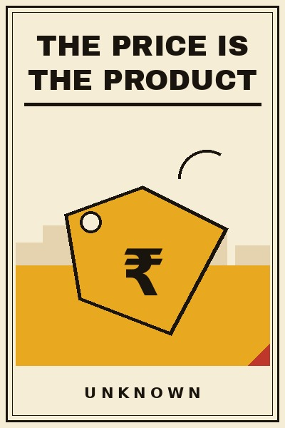

Library › Business & Startups
The Price Is the Product — Summary & Key Lessons

Ten lessons on pricing as strategy: discounts, anchors, and the thousands-per-year decisions most founders make in an afternoon.
📖 OPEN THE FULL INTERACTIVE BREAKDOWN →🌐 Read it in Hindi, Hinglish, Gujarati, Tamil & 22 more languages — free, with audio.
💡 The Big Idea
Founders spend months on the product and one afternoon on its price, then wonder why the margin died. Pricing is not a number. It is the product's second act, the moment where value becomes revenue, and it deserves the same research, testing and craft as the engineering. This book builds that craft: how customers actually decide with anchors, why discounts are loans against your brand, when premium is a moat and when cheap is a trap, how to raise prices without a funeral, and the psychology hiding in every rupee symbol. The examples are real and expensive: the department store that removed discounts and lost a quarter of its revenue in weeks, the brands that priced themselves into legend, and the quiet products that doubled margins with a nudge and a paragraph. Nothing in business compounds faster than a pricing decision made well, and nothing leaks slower than one made badly, because customers never write to tell you that you undercharged. This book is the afternoon, done properly.
🧠 The 10 Key Lessons
Lesson 1: The Anchor Decides
Chapter 1: First Numbers Stick
Human beings cannot judge absolute value; they judge comparisons, and the first number seen becomes the anchor that every later number is measured against. This is not a quirk, it is the engine of retail: the crossed-out original price, the premium decoy on the menu, the small-first pricing page. Founders who ignore anchoring leave the anchor to chance, usually to a competitor's price or a round number, and then negotiate against themselves. Set the anchor deliberately: show the premium version first, let the expensive context flatter the target product, and never let a customer meet your price naked.
📖 Example: The classic decoy experiments, where adding a strategically overpriced third option shifted choices dramatically, are replicated daily in every restaurant menu and pricing page; the retailers who master the display order quietly out-earn identical stores that merely stacked shelves. Read the full example →
⚡ Do this: Review your pricing presentation tonight: what does the customer see first? Put your premium option at the top, or introduce a deliberate high anchor, and reorder so your target offer is flattered by comparison. Measure the mix shift for thirty days.
Lesson 2: The Discount Loan
Chapter 2: Sales Are Borrowed Revenue
A discount feels like generosity and behaves like debt: revenue borrowed from the future at a brutal interest rate, because the customer's reference price falls permanently to the discounted one. The sale-trained customer waits for the sale, and the brand that held full-price authority becomes a calendar of promotions that nobody respects between events. Discounts as a discipline, planned, rare, purpose-driven, can work; discounts as a habit are the slow transfer of your margin to the least loyal customers in the market. Every percentage point of discount must be earned by a story: a season, a clearance, a first-year neighbour price. Never a reflex.
📖 Example: The department stores that ran permanent sales trained entire generations to never pay sticker, and the famous attempt to end the discounts, honest and correct as it was, destroyed a quarter of revenue in weeks because the habit had outlived the strategy; the brands that survived their industry's discount wars rationed sales like a state rations currency. Read the full example →
⚡ Do this: Audit your last twelve discounts: how many had a stated reason and an end date? Cap promotional weeks per year, in writing, and replace reflex discounts with bundles or added value that protect the reference price.
Lesson 3: Price the Value, Not the Cost
Chapter 3: The Hourly Rate Trap
Cost-plus pricing, add your margin to your cost, is the most common and most expensive pricing mistake, because it prices your inefficiency and ignores your customer's gain. The same product that cost you little may save a customer lakhs, and cost-plus hands that surplus to them forever. Value-based pricing starts from the other side: what is this worth to the buyer, in money, time, status or relief, and how do we keep a fair share of the value we create? The discipline requires knowing the customer's economics, which most founders never study, and the reward is margin that has nothing to do with your cost structure and everything to do with your insight.
📖 Example: The enterprise software and consulting firms that escaped the hourly-rate trap moved to outcome and value pricing and transformed their margins without changing their cost of delivery at all; the hourly firms beside them worked harder every year for shrinking effective rates. Read the full example →
⚡ Do this: Interview three customers this month about what your product saves or earns them, in their numbers. Rebuild one price from that value, not your costs. Keep a fair share, and let the customer keep the visible majority; both sides should feel they won.
Lesson 4: Premium Is a Product
Chapter 4: The Expensive Moat
A high price is not just revenue; it is positioning, quality signal and a self-reinforcing moat: premium prices fund premium inputs, attract premium talent, and buy the customer's belief before the first touch. The underpriced premium product is a tragedy of mismanagement, because it walks and talks like a commodity while carrying gold inside. Going premium demands the full package: price, place, packaging, promise, and the discipline to turn away the bargain hunters who would dilute the club. The reward is a business that competes on belief rather than on spreadsheets, and belief has the fattest margins in commerce.
📖 Example: The watch, coffee and apparel brands that own their categories all raised price above the commodity line and invested the margin into every signal of worth, while their near-identical competitors raced each other to the bottom of the same shelf, one discount at a time. Read the full example →
⚡ Do this: Test a premium tier, not a blanket rise: one version with visibly better inputs, packaging and promise, priced to signal rather than to cost. Study who buys it and why. Premium is learned in the market, not in the spreadsheet.
Lesson 5: The Cheap Trap
Chapter 5: Lowest Price Is a Job Nobody Wants
Being the cheapest is a legitimate strategy for exactly one winner per market, the one with scale, automation and cost discipline that make low prices sustainable, and a death sentence for everyone else who tries it. Underpriced products attract the most price-sensitive customers, the most demanding service loads and the least loyalty, and they train the founder to compete on the one dimension that always erodes. If your market's cheapest seat is taken by a giant, the affordable-premium slot above them, honest quality at a fair price, is often the most profitable real estate in the category. Escape the trap by being worth more, not by being sorry.
📖 Example: The Indian and global value giants that own the cheap seat earned it through decades of cost engineering; the boutique founders who tried to out-cheap them with smaller scale lost money on every order and learned that their real customers were waiting one shelf up. Read the full example →
⚡ Do this: Identify who owns the cheapest seat in your market and whether their cost structure can be beaten honestly. If not, design your offer one tier up: visibly better, fairly priced, proudly not the cheapest. Say the sentence out loud in your marketing.
Lesson 6: Raising Prices Without a Funeral
Chapter 6: The Brave Fifteen Percent
Rising costs and improving products demand price rises, yet most founders postpone them until the margin has bled for years, fearing exactly the loss that rarely comes. The craft: raise with notice, with a reason, and with grace, existing customers grandfathered or cushioned, new customers on the new world; raise in small brave steps rather than one shocking leap; and attach the rise to a visible improvement so the story has a spine. The data is consistent: small price rises lose single-digit percentages of the most price-bound customers and lift profit far more, because profit lives on the margin line, not the revenue line. The customers who leave over a fair, explained rise were the ones quietly subsidising everyone else at your expense.
📖 Example: The subscription services and FMCG brands that raised in disciplined annual steps with honest letters compounded margin for a decade, while the frozen-price competitors beside them quietly deteriorated the product to protect the price, and lost both when the collapse arrived. Read the full example →
⚡ Do this: Plan a fifteen percent rise on your oldest, cheapest tier this quarter: thirty days notice, one honest reason, one visible improvement shipped alongside. Measure the churn against the margin gained. Repeat annually if the math holds, and it will.
Lesson 7: The Decoy and the Trio
Chapter 7: Choice Architecture
Customers do not choose between products; they choose between options, and the architecture of options decides almost as much as the products. The reliable structures: the trio, where a mid option is flattered by a premium sibling; the decoy, an option priced to make another look wise; and the removal of choice overload, because more than a handful of options collapses decision-making entirely. Simplify like an editor: three tiers where there were seven, one recommended where there was a grid, one obvious upgrade path where there was a maze. Choice architecture is pricing's silent salesperson, working every hour the store is open.
📖 Example: The pricing pages that converted best across every industry studied offered three or four options with one visually preferred, while the supermarket jam studies proved the deeper law: more choice attracts attention, fewer choices collect money. Read the full example →
⚡ Do this: Cut your pricing page to three options with one marked recommended, and add a premium anchor above the target tier. Compare conversion and average order value over the next month against the old layout. Keep the winner.
Lesson 8: The Fairness Line
Chapter 8: What Customers Forgive
Customers accept high prices and hate unfair ones, and the difference is psychological, not mathematical: surge pricing on a captive ride feels like robbery, the same multiplier on an airline seat bought a month ahead feels like commerce. The fairness line is drawn by framing, timing and honesty, price rises explained, gouging avoided, small print killed, and the same product quietly sold cheaper to strangers than to loyalists is the cardinal sin that loyalty programmes exist to hide. Price aggressively where the value story is strong, and never let the customer catch the maths treating their loyalty as a weakness. Trust, once priced unfairly, never buys again at any number.
📖 Example: The consumer backlashes against surge and gouging, from taxi apps to essential goods, each taught the same lesson in real time, while the companies that framed identical price levels with honesty and consistency kept their reputations and their margins in the same quarters. Read the full example →
⚡ Do this: Audit your pricing for the fairness line: are loyal customers ever paying more than new ones? Kill the shadow discounts that reward switching over sticking. Write the one-sentence fairness story of your price list; if you cannot, the list needs surgery.
Lesson 9: Psychology of the Rupee
Chapter 9: Small Numbers, Big Margins
The last mile of pricing is psychological craft: charm prices that read lower than they are, bundles that hide component prices, the loss-framed trial that converts, the monthly-versus-annual framing that quadruples commitment, and the rounding rules of different cultures and categories. None of this replaces value; it harvests the value already created, the difference between a good price and an optimally presented one compounding daily across every transaction. The founders who treat these as tricks stay broke; the ones who treat them as craft, tested, measured, category-appropriate, add margin points that no operational efficiency could ever find.
📖 Example: The price-testing cultures of large retailers and subscription platforms, running constant experiments on endings, framing and bundles, report persistent single-digit lifts that dwarf their supply-chain savings, while the founders above them leave the same points on every invoice, forever. Read the full example →
⚡ Do this: Pick three pricing presentations to test this quarter: an ending digit, an annual-versus-monthly frame, one bundle. Run them on real traffic, keep the winner of each, and document the lift. Craft compounds when it is recorded.
Lesson 10: The Pricing Practice
Chapter 10: A Living System
Finish with the mature view: pricing is not a decision but a practice, a living system reviewed quarterly, tested monthly and owned by someone with the words price in their title. The system holds the anchor discipline, the discount ration, the value interviews, the premium experiments, the brave annual rise, the tested psychology, and one more habit above all: talking about price inside the company without shame, because the silence around pricing conversations is where margins go to die quietly. Companies that price as a practice out-earn identical companies that price as an afterthought, every year, in every category, and the gap compounds like the best investment you never made yet.
📖 Example: The consumer and software businesses that famously compounded margins for decades all ran pricing as a discipline with owners, calendars and experiments, while their identical-product rivals treated price as a settled fact of nature and donated the difference, forever, to whoever asked nicely. Read the full example →
⚡ Do this: Appoint a pricing owner today, even if it is you with a calendar invite. Build the quarterly pricing review: anchors, discounts, tests, rises. Put one experiment live this month. The practice starts the day you stop treating price as a fact.
✅ 5-Step Action Plan
- Set the anchor: premium option first, deliberate high context, never a naked price.
- Ration discounts to planned, reasoned, dated events; audit the last twelve for reflexes.
- Interview three customers on the value your product creates and rebuild one price from it.
- Ship the brave fifteen percent rise on your oldest tier with notice, reason and grace.
- Appoint a pricing owner and install the quarterly pricing review with live experiments.
⚠️ When This Doesn't Work
This is a TheSmallBook Original: written in-house, published under the name Unknown, with no real author to credit. The playbook is original; the examples are real public history (the department-store discount wars, the jam studies, the surge backlashes) cited honestly from the record. Nothing here is legal advice: pricing practices, especially personalised or surge pricing, have laws and regulators. Price bravely, within the rules.
💀 The Graveyard Proves It
🏷️ JCPenney — The CEO Who Banned Discounts Customers Loved. Burn: $4.3B in sales, 19,000 jobs in 17 months. Read the full case study →
💬 Best Quotes from The Price Is the Product
- “Customers never email to say you priced too low. The silence is expensive.”
- “A discount is a loan against your brand, collected with interest.”
- “Price is the loudest sentence your product speaks. Most founders mumble it.”
Interactive version: mark lessons as read, listen in your language, share quote cards.